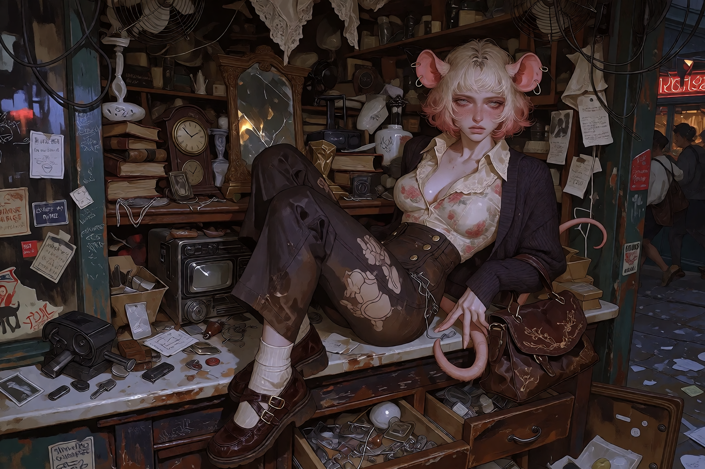
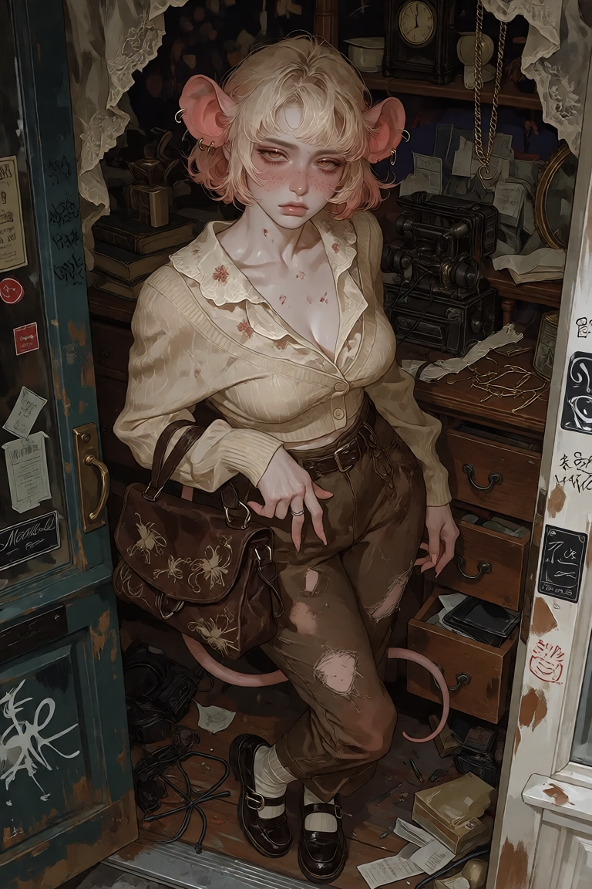
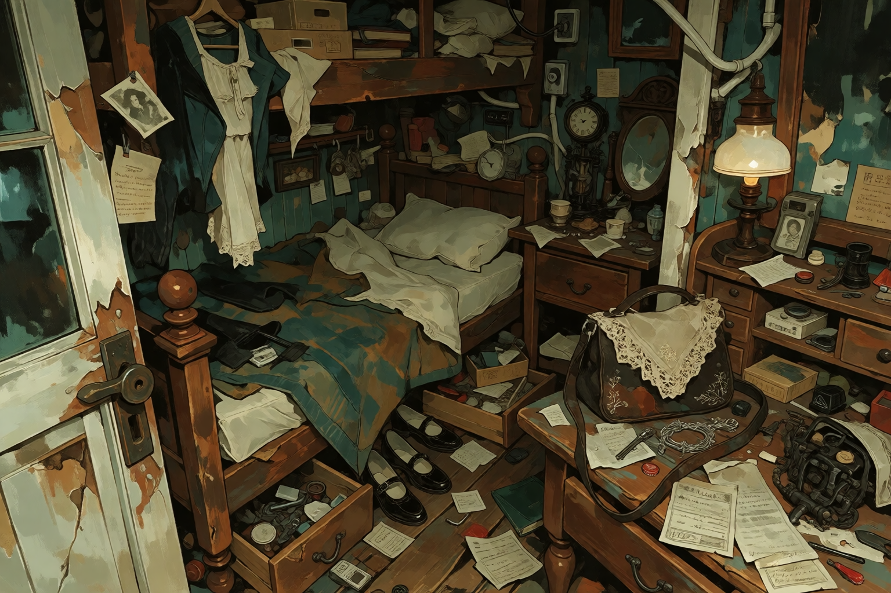
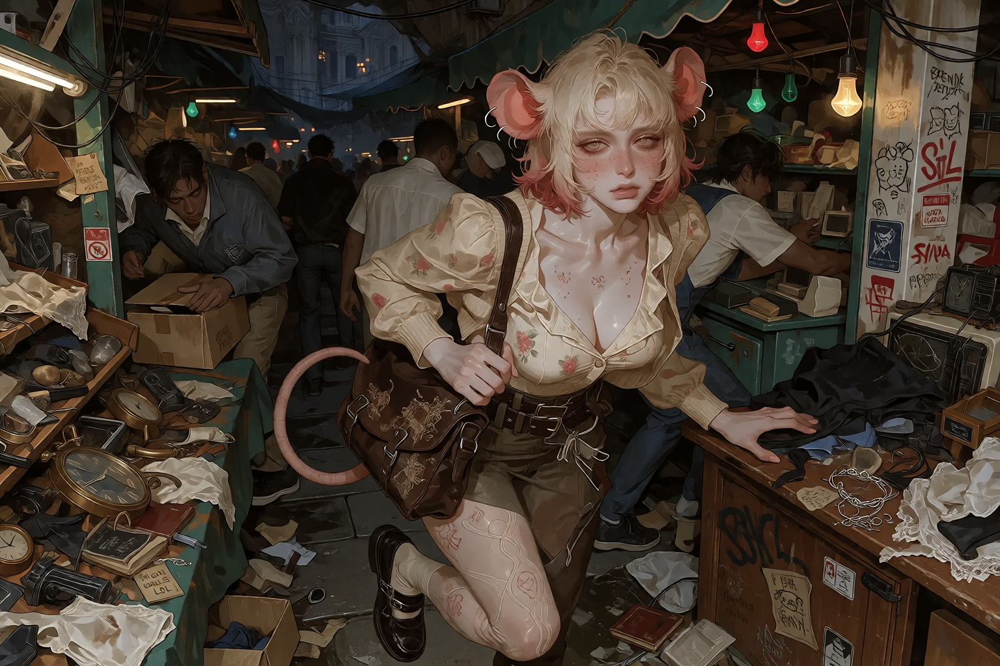

PERSONAL
"I'm Doll. Because that's what the fuckers in Velvet called me when they saw me scurrying through the markets like some fragile little trinket. Well, they can call me whatever the fuck they want, as long as they don't touch my shit."
Tiny. Fast. Territorial. Carries enough questionable shit in one handbag to make several municipal departments nervous.

SUBJECT-SUPPLIED RECORD

"I'm Doll. Because that's what the fuckers in Velvet called me when they saw me scurrying through the markets like some fragile little trinket. Well, they can call me whatever the fuck they want, as long as they don't touch my shit."
"I look like a goddamn nightmare wrapped in lace and bullshit. I've got this stupid strawberry blonde bob that's always fucking messy, big fucking eyes that people think means I'm sweet fuck you and these dumb pink mouse ears. I wear what I like: frills, old lace, vintage shit from the Moths. I might look like a porcelain doll someone dragged through a gutter, but I promise you, I'll gut you before you even get close."
"I twitch. My tail won't fucking stop when I'm pissed or excited or bored. And I scurry. I don't walk like those slow, lumbering meatbags; I move fast, I find the tight spots, and I disappear into the shadows before anyone realizes I was even there. It's not 'cute,' it's practical."
"I'm fucking exhausted, honestly. Most of the time I'm just looking for something interesting to salvage or someone to insult so I don't lose my goddamn mind. I don't give a shit about being nice. I care about things that matter: my crew, interesting junk, and not being bored to death."
"The smell of old, decaying paper. Like a library that's been rotting in a basement for fifty years. It's fucking beautiful."
"Wake up, curse the fucking sun, check my satchel to make sure my blades are sharp, find something interesting in a dumpster or a thrift stall, eat something questionable, and try not to get stabbed. Repeat until I die."
"The Outliers. They're my fucking family. Ammonia's weird as hell and doesn't understand how clothes work, Riot's a walking chemical disaster, and Benoit's the only reason we aren't all dead in a ditch already. I'd fucking kill for them, and I'd die for them. Anyone who thinks otherwise can eat shit."
"Because the city tried to chew me up and spit me out, and I realized I'd rather be a stray with a pack than a 'proper' person with shit teeth and no spine. I stayed because they're the only ones who don't look at me like I'm something to be collected."
"Growing up in Velvet. Learning that everything valuable in this shithole city is either stolen, broken, or waiting to be taken. It taught me that if you don't hold onto what's yours, someone's gonna fuckin' rip it out of your hands."
"Probably a collection of weirdly specific shit: broken clockwork, some antique lace that's half rotted, a few switchblades, and enough gunpowder to level a fucking apartment block. And don't you fucking dare touch it."
"Fuck off."
SAINT JUDE'S LANDING MUNICIPAL ARCHIVE
Subject exhibits physiological traits consistent with small rodent subspecies. High degree of tactile sensitivity noted in the caudal appendage (tail) and auditory receptors. Subject demonstrates hypervigilance and rapid reaction times, typical of prey species adapted to urban environments.
Despite diminutive stature, subject displays significant aggressive tendencies and territorial behavior when provoked or when protective instincts regarding affiliated subjects are engaged.
Subject is classified as HIGH AGILITY COMBATANT. While lacking raw physical power, subject's lethality stems from unpredictability, speed, and extensive familiarity with improvised weaponry.
Subject's psychological profile indicates a 'cornered animal' response mechanism; threat level increases exponentially when subject perceives a threat to her immediate social unit.
RECOMMEND CAUTION DURING CLOSE QUARTERS INTERACTION.
Doll is deliberately built around the contradiction between presentation and behavior: she looks delicate, vintage, feminine, collectible, almost ornamental, and then immediately becomes the person in the room most likely to threaten somebody over a broken piece of junk.
Her mouse traits are practical rather than mascot-like. The scurrying, twitching, squeezing through gaps, fast movement, territorial behavior, and sensitivity to her surroundings are part of how she physically exists in Mothball.
Her relationship with old, broken, discarded things is important. Doll does not simply like "vintage" things because they are pretty. She likes objects that survived being unwanted.
The name came from Velvet's perception of her as something tiny, delicate, and collectible. Doll kept the name and made it hers.

CREATOR-SUPPLIED CONTEXT / IMAGE RECORD

SHE WILL KNOW.

OUTLIER IS A SOCIAL IDENTITY. It is not a formal organization, criminal classification, job title, gang rank, or municipal designation.

“Fuck off.”
Frequency of use: RECORD PENDINGTHIS QUESTIONNAIRE REMAINS HERE.
Full name
Nicknames
Pronouns
Gender
Species
Species subtype / phenotype
Age
Birthday
Zodiac sign
Blood type
Height
Weight
Build
Dominant hand
Origin
Current residence
Occupation
Social identity
Outlier status
Languages
Accent / dialect
Education
Relationship status
Skin
Hair
Eyes
Face
Ears
Tail / wings / horns / whatever applies
Teeth
Hands
Nails
Scars
Piercings
Tattoos
Body modifications
Distinguishing marks
Scent
Body temperature
Typical posture
How they walk
How they sit
How they sleep
What they look like when sick
What they look like when pissed
What they look like when genuinely happy
Species-specific traits / instincts
Animal habits
Things others notice
Things normal to species but weird to humans
Things they do NOT do despite species
Core personality
First impression
Actual personality
Private personality
Social behavior
Emotional range
Sense of humor
Temper
Patience
Impulse control
Fears
Pet peeves
Things they secretly love
Things they pretend not to care about
Things that make them genuinely angry
Things that embarrass them
Things they find funny
Things they find disgusting
Things they will absolutely never do
Things they absolutely will do
What makes them feel safe
What makes them feel threatened
How they handle conflict
How they apologize
How they show affection
How they receive affection
Favorite food
Comfort food
Favorite drink
Alcohol tolerance
Favorite snack
Food they hate
Weird food habits
Favorite color
Favorite smell
Worst smell
Favorite place in SJL
Place they avoid
Favorite time of day
Favorite weather
Favorite season
Favorite music
Favorite artist / band
Favorite song
Angry music
Sad music
Horny music
3 AM SJL music
Favorite movie / show
Favorite book
Favorite game
Favorite clothing item
Most expensive thing they own
Most sentimental thing they own
Most useless thing they refuse to throw away
Current pockets
Current bag
Under their bed
Bathroom
Browser/search history
Most embarrassing purchase
Last thing Googled
Last person texted
Who they call when shit goes wrong
Typical morning
Typical afternoon
Typical night
Sleep schedule
Eating schedule
Work habits
Hygiene habits
Cleaning habits
Spending habits
Smoking / vaping / etc.
Exercise / physical habits
What they do when bored
What they do when nobody is watching
What they do when they can't sleep
What they do when angry
What they do when sad
Tiny stupid details
Family
Friends
Best friend
Closest Outlier
Person they trust most
Person they trust least
Person they would call at 4 AM
Person they would hide a body for
Person they argue with constantly
Person they secretly admire
Person who annoys the absolute fuck out of them
Person they would never admit they care about
Romantic history
Current romantic relationships
Sexual relationships / preferences where canonically relevant
Enemies
Rivals
People they've fucked over
People who've fucked them over
People they owe
People who owe them
Who they protect
Who protects them
How they joined
Who found them
Why they stayed
How often they disappear
Where they tend to sleep
Who they travel with
Where they usually turn up
What they contribute
What they are infamous for
What the other Outliers know
What the other Outliers don't know
Childhood
Family background
Where they grew up
Major events
Education
First job
First crime, if applicable
First encounter with another Outlier
How they ended up where they are
Significant relationships
Important injuries
Important losses
Major turning points
Current situation
Clothes
Receipts
Notes
Photos
Trash
Personal effects
Weapons
Food wrappers
Books
Drawings
Screenshots
Unfinished projects
Weird little objects
Anything they collect
Anything they refuse to explain
Actual things they say
Repeated phrases
Favorite swears
What they call people
Things they say angry / drunk / alone
THE PEOPLE FILE